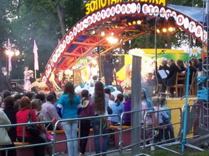
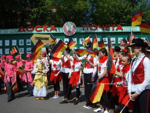
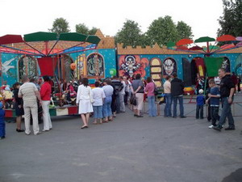
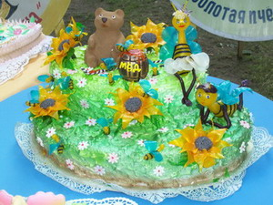
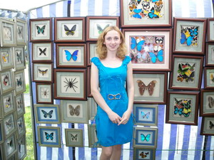

|
X Международный фестиваль детского творчества
«Золотая пчёлка».

На завершившийся X Международный фестиваль детского
творчества «Золотая
пчёлка» съехались юные таланты из Европы и Азии. Более тысячи
исполнителей, свыше десятка номинаций.
Он собрал
солистов и ансамбли, хореографические коллективы народного
и эстрадного искусства, а также ребят, занимающихся живописью и
графикой, декоративно–прикладным искусством и
художественным
творчеством.
С 26 по 30 мая 2010 года в нашем районе царил
настоящий праздник
детства, радости, весны, творческого вдохновения и таланта. По
традиции,
мероприятие прошло накануне Международного дня защиты детей.
Символ праздника – «золотую пчёлку»
— можно
было встретить на каждом шагу и в самом неожиданном исполнении: в виде
деревянной скульптуры, игрушек, надувных шаров, сувениров, тату и даже
пряников! Из желающих сделать фото на память вместе с
«пчёлками» в ярко-желтых платьях и красочных
костюмах
выстраивались целые очереди.
За полтора десятка лет существования добрые вести о фестивале
разлетелись во все уголки земного шара. Причём не только по официальным
каналам.
Поэтому десять лет назад он обрёл статус международного и у него
появились постоянные участники и поклонники, добровольно взявшие на
себя роль пропагандистов «Золотой пчёлки» как у
себя на родине, так и за её пределами.
Скажем, благодаря такой форме народной дипломатии в числе участников
появились юные артисты из Турции. Их педагоги узнали о фестивале от
коллег из Молдовы.
В фестивале приняли участие гости из 18 стран: Армении, Беларуси,
Бельгии, Болгарии, Казахствана, Кыргызстана, Латвии, Молдовы, России,
Эстонии, Польши, Норвегии, Финляндии, ряда автономных республик. Причём
шесть стран участвовали впервые.

В составе делегации из Германии было 14 девочек
— участниц
танцевальной группы «Табу»,
четыре руководителя и официальный представитель — депутат
городского совета г. Бинген господин Бастине Штефан.
Кроме того, приехали 10 членов благотворительной инициативы
«Помощь детям Чернобыля» региона
Рейн–Нае,
которая занимается организацией приёма детей
на оздоровление.
Не менее представительным
был и состав международного жюри. В этом году
в жюри входили представители Беларуси, России, Украины, Молдовы, Литвы,
Польши, Турции.
Перед открытием фестиваля к главной сценической
площадке, которую установили в центральном парке города, было не
пробиться. Дети и взрослые заняли зрительские места и плотным кольцом
окружили импровизированный зал. Организаторы позаботились, чтобы каждый
желающий мог видеть, что происходит на сцене: в нынешнем сезоне здесь
впервые установлен специальный экран.
Аплодисментами зрители приветствовали ансамбль танца
«Непоседы» из города Тосно Ленинградской области,
вокальную группу «Переменка» из Могилева, коллектив
«Бонварнан» из Северной Осетии. Казалось, зрители
сами готовы пуститься в пляс вместе с украинскими танцорами из
«Квитограя» и девчонками из Бельгии.
В пятый раз официальным партнером фестиваля
выступил оператор связи МТС.
В рамках фестиваля компания МТС пригласила в Климовичи группы
«Цвет Алоэ» и J:Mors. Послушать отличную музыку и
поучаствовать в веселых конкурсах, организованных ведущим программы
Дмитрием Санковичем, собралось множество желающих.
Музыкально-развлекательная программа от МТС вызвала огромный интерес и
внесла новые ритмы в размеренную жизнь города.

Организаторы фестиваля удивляли гостей и участников
лазерным шоу,
фейерверком, салютом — неизменными атрибутами большого
праздника. В
Климовичском районе многое было сделано к встрече долгожданных гостей:
проведены работы по благоустройству населённых пунктов, подготовлены
места проживания, питания участников фестиваля, введена в строй после
капремонта гостиница "Дружба". Также для гостей, участников и зрителей
работали подворья, торговые ряды, аттракционы.
Конкурсные прослушивания проходили по таким номинациям, как солисты
—
народное пение, вокальные ансамбли — народное пение,
вокальные ансамбли
— эстрадное пение. Просмотр участников фестиваля проходил и
по
хореографическому искусству (коллективы эстрадного танца и
народно–сценического танца). Конкурсный просмотр работ по
декоративно-прикладному и изобразительному искусству принимали детская
художественная школа и районный краеведческий музей. В их залах
открылись выставки "Академия детского творчества" и "Волшебные краски
детства".
Десятый фестиваль, безусловно, удался - отметил
заместитель
председателя Могилевского облисполкома Валерий Малашко:
"Во–первых, в
«Золотой пчёлке» в этом году приняло участие
рекордное количество стран
— 18. При этом стоит учесть, что Россия была представлена
многими
регионами, плюс от Украины участвовали и представители Крыма.
Во–вторых, рекордным было и количество гостей и участников
— около
полутора тысяч. В–третьих, более 30 тысяч зрителей посетили
мероприятия
фестиваля. Сценические выступления проходили не только на центральных
площадках, но и в агрогородках Климовичского и соседних с ним районов.
Все это обогатило палитру фестиваля и говорит о том, что фестивалю жить
еще очень и очень долго".

На вопрос, о чём говорится в его песнях, учащийся Республиканской
школы-интерната искусств из города Душанбе (Таджикистан) Айнулло
Буризода ответил: «Я пою на родном языке о своём крае, о
маме, о дружбе…». Без преувеличения
можно сказать, что эти темы были главными и в других произведениях,
звучащих со сцены. Ибо они отражают внутренний мир юных исполнителей,
их мечты, надежды, устремления и чаяния. В них заключается и главная
идея фестиваля «Золотая пчёлка».
Главный принцип фестиваля «Золотая
пчёлка» — ни
один из участников не должен остаться без подарка. Потому и официальное
закрытие фестиваля заняло несколько часов.
Первые места заняли:
солисты–вокалисты Анна Атрощенко и Кристина Светличная
(Минск), Янина Гинь (Славгород), Анна Трубецкая и Кирилл Башаримов
(Могилев), Екатерина Гончарова (г. Берестовица Гродненской
обл.); вокальные ансамбли «Пралескі»
(Могилев), «Серпантин» (г. Арзамас Российской
Федерации); хореографические коллективы «Бонварнон»
(г. Владикавказ, Россия),
«Барвинок» (г. Луганск, Украина), танцевальные
группы из Польши и Турции; юный художник Марина Сергеева
(Климовичская ДХШ).
Гран–при получили вокалистка Лилия
Угарова из
г. Арзамаса (Россия), детский танцевальный ансамбль народных
танцев
"Брыулец" из Сынджерейского района (Гагаузия, Молдова) и учащаяся
Климовичской детской художественной школы Дарья Голикова. Однако призов
и
сувениров увезли с собой значительно больше участников.
Специального приза Союзного государства России и Беларуси удостоен ещё
один климовчанин — Дмитрий Рыжиков. Ему редакция
«Могилёвских ведомостей» вручила сертификат
полугодовой подписки на газету.
Надо было видеть, как тепло
и сердечно прощались мальчишки и девчонки,
обмениваясь адресами, телефонами, сувенирами. Дни, проведённые вместе,
стали для них ярким, запоминающимся событием. И многие убедились, что
язык дружбы прост и понятен, какими бы дальними ни были расстояния
между городами и странами.
«Нам здесь понравилось буквально всё: организация фестиваля,
замечательная белорусская природа, чистый, ухоженный город, тёплый
приём, гостеприимство, забота и внимание, — говорит солистка
вокального ансамбля из Казахстана Жазира Суюгалиева. — Мы
проехали на автобусах и поезде огромное расстояние, на что ушло целых
три дня, но усталости не чувствуем. Атмосфера праздника вселяет
бодрость, дарит прекрасное настроение». 
«А вот наших мам и пап пришлось уговаривать и агитировать,
— включается в разговор госпожа Жозин Деру. — Дело
в том, что в Бельгии очень мало информации о Беларуси, поэтому тревогу
родителей можно понять. Теперь в качестве убедительных аргументов в
пользу вашей страны и этого замечательного, красочного действа наши
воспитанники привезут не только устные рассказы, но и фотоснимки,
буклеты, диски с видеозаписями. Наш танцевальный ансамбль, кроме всего,
побывал ещё и на выпускном вечере в местной школе, где художественный
руководитель коллектива Эрик Крош провел мастер–класс. И мы,
взрослые,
были поражены, как буквально через несколько минут все дружно танцевали
замечательную зумбу. Очень способными и музыкальными оказались ваши
ученики! Кстати, с нами приехал журналист, который уже передал в свою
газету первые материалы с мероприятия».
«Мы почерпнули немало полезного для себя в части организации
фестиваля, сценарного решения открытия праздника и заключительного
гала-концерта, — сказал директор творческого центра
«Диапазон» из столицы Эстонии Таллинна Наталья
Зенченко. — Недаром группа специалистов была отмечена
наградами, в том числе и Министерства культуры Беларуси, которые вручил
глава ведомства. Участие в этом мероприятии руководителей высокого
ранга ещё раз доказывает, какое внимание уделяют власти заботе о
подрастающем поколении, о всестороннем его развитии, раскрытии талантов
и способностей, их поддержке. Этому можно только по–доброму
позавидовать…».
Фестиваль уникальный, говорили руководители коллективов и представители
делегаций. Он стал действительно значимым событием в культурной жизни.
И не только Беларуси. На фестивальных сценах состоялись встречи с
яркими, оригинальными юными дарованиями из ближнего и дальнего
зарубежья. «Золотая пчёлка» улетела, но
через год обещала вернуться.
|